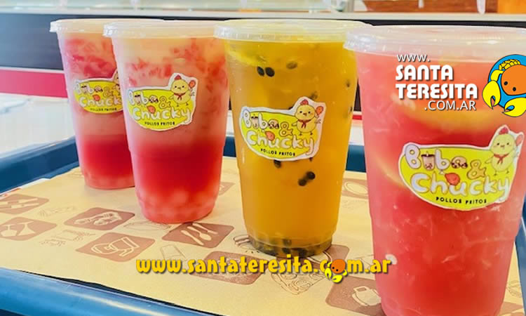

Mejores lugares de comida en Santa Teresita
La ubicación de nuestro restaurante es estratégica y está pensada para ofrecer a nuestros clientes la mejor experiencia posible. Nos encontramos en la peatonal de Santa Teresita, en la calle 2 nº 783 entre las calles 34 y 35, un lugar privilegiado en el corazón de la ciudad. Nuestro restaurante es un espacio diseñado para que nuestros clientes puedan disfrutar de momentos agradables en compañía de sus seres queridos, rodeados de un ambiente cálido y acogedor. Ofrecemos una amplia variedad de deliciosos platos, elaborados con los mejores ingredientes y siguiendo las recetas más tradicionales y auténticas. Para acompañar la comida, también contamos con una excelente selección de vinos, cuidadosamente seleccionados para satisfacer los paladares más exigentes.
En nuestro restaurante, nos enorgullecemos de ofrecer atención personalizada y por los dueños para nuestros clientes, lo que significa que nos preocupamos por hacer que cada visita sea una experiencia única y satisfactoria. Además, nos complace ofrecer nuestro servicio durante todo el año, para que nuestros clientes puedan disfrutar de nuestras deliciosas opciones culinarias en cualquier momento. En cuanto a nuestro menú, ofrecemos una amplia variedad de platillos, desde pastas caseras elaboradas con los ingredientes más frescos, hasta deliciosas carnes que se deshacen en la boca y sabrosos pescados que se cocinan a la perfección. Nuestras cazuelas de mariscos y exquisitas paellas son una verdadera delicia para el paladar, y para aquellos que prefieren el pollo, ofrecemos una variedad de opciones para satisfacer cualquier antojo.
El restaurante Estilo Jagüel es un verdadero oasis gastronómico ubicado en un lugar privilegiado de la hermosa ciudad de Santa Teresita, en La Costa. Se encuentra en el Boulevard La Alameda 302, en el Camino del Jagüel, lo que significa que ofrece a sus visitantes la posibilidad de disfrutar de una deliciosa comida rodeada de hermosas vistas y un ambiente agradable y acogedor. Este restaurante, además de ser un lugar con una estética muy cuidada y atractiva, cuenta con una amplia variedad de opciones en su menú, desde platos tradicionales hasta opciones más innovadoras y creativas. Sin duda, visitar Estilo Jagüel es una experiencia única para los amantes de la buena comida y el buen ambiente.
Si estás buscando un lugar único para desconectar y disfrutar de una buena comida, entonces Talu Resto Bar es el lugar perfecto para ti. Nos encontramos en Entre Rios 256, rodeados de naturaleza y con un ambiente tranquilo y acogedor. En nuestro restaurante, ofrecemos una amplia variedad de platos y bebidas, elaborados con los ingredientes más frescos y siguiendo las recetas más auténticas. Ya sea que prefieras platos tradicionales o algo más innovador y creativo, tenemos opciones para satisfacer todos los gustos. Además, nuestra ubicación sobre el monte te permitirá disfrutar de vistas espectaculares mientras comes y disfrutas de una buena conversación.
En la Av. 32 esquina 7, encontrarás un lugar que ha revolucionado la manera en que se disfruta el café en La Costa. Desde el año 2018, nuestro establecimiento se ha dedicado a ofrecer la mejor experiencia posible a nuestros clientes, convirtiéndonos en un punto de referencia para aquello que aman el buen café y los momentos de relax. En nuestro establecimiento, podrás disfrutar de deliciosos desayunos y meriendas, elaborados con ingredientes frescos y siguiendo las recetas más auténticas. También ofrecemos una amplia variedad de opciones de café, desde los más clásicos hasta los más innovadores y creativos. Además, contamos con una excelente selección de cervezas para aquellos que prefieren algo un poco más fuerte. Y si no puedes venir a nuestro local, no te preocupes, porque también ofrecemos servicio de delivery para que puedas disfrutar de nuestras deliciosas opciones desde la comodidad de tu hogar.
Si eres amante de la comida rápida y los pollos fritos, entonces no puedes perderte la inauguración de Buba Chucky en la ciudad de La Costa. Nos encontramos en la calle 1 n 1875, entre las calles 46 y 45, y estamos listos para ofrecerte los mejores pollos fritos, burgers y snacks de la zona. Además, para celebrar nuestra inauguración, estamos ofreciendo una promoción imperdible: la segunda unidad tiene un 50% de descuento en cualquiera de nuestros productos. También tenemos opciones para toda la familia, con nuestros combos familiares y bebidas deliciosas para acompañar tus comidas. Si eres un amante del té, también encontrarás opciones innovadoras en nuestra carta de bebidas. Además, i eres un fanático de los descuentos, no te puedes perder nuestras promociones exclusivas en el local: por ejemplo, puedes disfrutar de un 3x2 en Buba Tea o obtener descuentos especiales al comprar en la tienda por primera vez.
